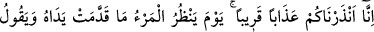
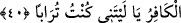

et-Te’vilâtü’n-Necmiyye’de meaben kelimesi “Mercian/dönüş yeri” ve dünyadan
âhirete dönüş, âhiretten dünyanın ve âhiretin rabbına dönüş şeklinde tefsir olunmaktadır.
Çünkü dünya ve âhiret ehlullaha haramdır. Onların hedefi sadece Allah Teâlâ’dır.
40. Biz, yakın bir azap ile sizi uyardık. O gün kişi önceden yaptıklarına bakacak
ve inkârcı kişi: «Keşke toprak olsaydım!» diyecektir.
“Biz yakın bir azab ile” âhiret azâbı ile “sizi uyardık.” Yâni sûredeki öldükten sonra
dirilmeyi ve onun ardından dirilmeye götüren unsurları dile getiren âyetlerle sizi
uyardık veya hem bu sûre ve hem de Kur’an’da yer alan korkunç belâlar ve musibetlerle
sizleri uyardık.
Bu âyetteki hitab arap müşrikleriyle Kureyş kâfirlerinedir. Çünkü onlar öldükten
sonra dirilmeyi inkâr ediyorlardı. Bâzı tefsirlerde bu âyetteki hitabın sadece Arap
müşrikleriyle Kureyş kâfirlerine değil, bütün herkese olduğu ifâde edilmektedir. Çünkü
her tâifenin ve zümrenin uyarılmasında onlar için faydalar vardır.
Âyette âhiret azâbının “yakın azab” şeklinde nitelenmesi, bu azâbın bir gün kesin
biçimde başa geleceğinden dolayıdır. Dolayısıyla âhiret azâbı Allah Teâlâ açısından -
kâfirler uzak ve imkânsız görseler de- hem yakındır ve hem de mümkündür. Dolayısıyla
onlar da: “Kıyâmet gününü gördüklerinde (dünyada) sadece bir akşam vakti ya da
kuşluk zamanı kadar kaldıklarını sanırlar” (en-Nâziat, 79/46) âyet-i kerîmesinin
hükmü gereğince onlar da bu azâbı yakın görürler.
Mârifet ehli birisi şöyle diyor: Yakın azab nefse, dünyaya, hevâ ve hevese iltifat etme
azâbıdır.
Kâşânî’ye göre âyetteki “yakın azab”dan maksad a’mâl-i fâsideden kaynaklanan fâsık
hey’etlerin azâbıdır. Yoksa ondan daha uzak olan kahr ve gazab azâbı değildir. Kahr ve
gazab azâbı, onların elleriyle önden gönderdikleridir.
“O gün kişi önceden yaptıklarına bakar.” Bu âyetteki “yevm/gün” kelimesi yukarda
geçen azab kelimesinden bedel veya onun sıfatıdır. Buna göre âyet-i kerîmenin mânâsı
şöyledir: “Biz kişinin, gerek hayır gerek şer, önceden yaptıklarına bakıp da kâfirin,
keşke ben toprak olsaydım, diyeceği o gün azâbıyla sizi uyardık.”
Verdiğimiz bu anlama göre âyetteki “mâ” ism-i mevsul olup “şey” anlamına
gelmektedir. Ayrıca bu “mâ”yı soru edâtı olarak almak da mümkündür. Buna göre âyet-i
kerîmeye şöyle anlam verilebilir: “O gün kişi iki eliyle yaptıklarının ne olduğuna bakar
ve kâfir der ki: Keşke ben toprak olsaydım.”
“Kişi” demek olan “el-mer’u” hem mümin hem de kâfir anlamında genel bir
kelimedir. Çünkü herkes o gün kendi amelini, gerek hayır gerek şer, belli bir sayfada